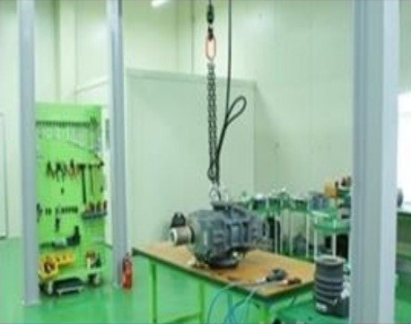
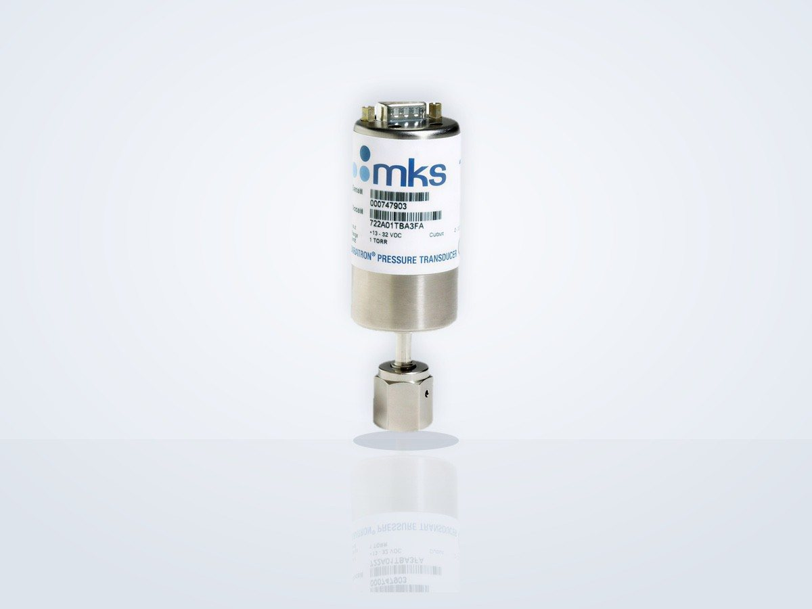
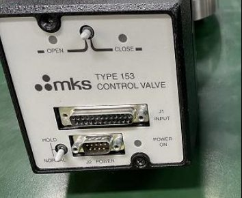
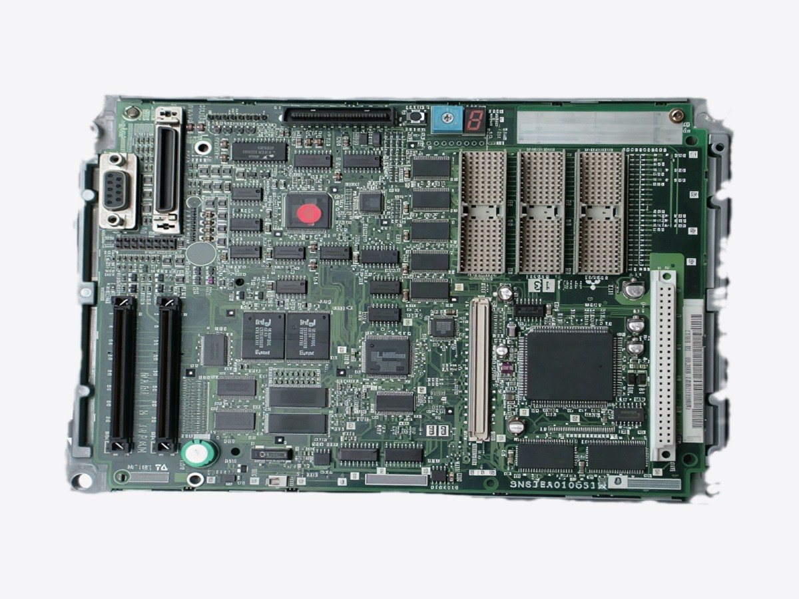

진공·
펌프·밸브·칠러.
펌프 오버홀, 밸브 수리, MKS 진공계·
진공·
진공 펌프·밸브·칠러 서비스


드라이 펌프
주요 시리즈 오버홀·
터보 펌프·밸브
STP 터보 펌프 수리, 펜듈럼 밸브 오버홀, MKS·
칠러
컴프레서 칠러·
진공 장비｜MKS 진공계
MKS 진공계 수리·교정 및 호환품 제안
MKS 정전용량식 진공계(Baratron)의 고장 진단·

16수리 대응 MKS 기종 시리즈
9호환품 제안 가능한 MKS 형식
5호환품 표준 풀스케일(0.1~1000 Torr)
수리 대상 기종
- Baratron: 622 / 623 / 625 / 626 / 627 / 628 / 629 / 631
- Baratron: 722 / 727 / 728 / 740 · E27H / E28H / E29H
- MKS 902 시리즈
- 센서: Standard / Etch Baffle / 가열형(45·
100· 150· 200℃) / 비가열형 - MKS 이외 제조사의 정전용량식 진공계 수리도 상담 가능
서비스 내용
- 고장 진단: 전기 회로·
센서· 가열 유닛 등의 고장 부위를 특정 - 수리: 고장 부위 부품 교체·
수리 - 교정: 정확도 확인·
영점 조정· 스팬 교정(교정 증명서 발행 가능) - 정기 유지보수: 정기 점검·
클리닝· 예방 보전 - 수리 불가·
단종품: 호환품 제안
호환품: 대상 기종
- 대상 MKS 형식: 624H / 625H / 626D / 627H / 628H / 631F / E27H / E28H / DA02
- DA02는 EtherCAT 출력 대응 호환품을 제안
- 위 이외의 MKS 형식(622·
623· 722· 727· 728· 740· 902 등)도 상담 가능 - 타사 교체 대상 예: INFICON CDG045D / CDG025D, Edwards Barocel 600 / 655 / 658 / 659, Setra 750 / 760, Brooks CMC / XacTorr, ANELVA M-341DG / M-342DG
호환품 선정 시 확인 사항
- 교체 대상의 제조사·
형식, 측정 레인지· 필요 정확도 - 설치 위치·
플랜지/피팅· 설치 자세, 센서 온도· 챔버 벽 온도 - 출력(아날로그/디지털)·
전원(±15 V / 24 V)· 사용 설정점 수 - 공정 가스·
부생성물, 압력 제어 용도 여부 - 호환품은 특정 커넥터·
출력 구성으로 공급 - 기존 정품 컨트롤러(표시기)와 조합 불가
호환품: 주요 사양
- 금속 다이어프램식·
니켈기 합금 바디· 전용접 구조, 부식성 가스 대응 - 풀스케일: 1000 / 100 / 10 / 1 / 0.1 Torr(중간 레인지는 가까운 표준 레인지 사양에 준함)
- 정확도 등급: 읽음값의 0.15% / 0.25% / 0.5%(100℃ 이상은 0.25%부터)
- 센서 온도: 비가열 / 45℃ / 100℃ 등
- 전원 ±15 V, 출력 0–10 V DC, DB15, 설정점 2점
- 출력·
통신 사양(4–20 mA, RS485, DeviceNet, Ethernet, EtherCAT 등)도 상담 가능 - 자동 온도 보상, 풀스케일·
영점 조정 기능(원터치 제로) - 피팅: NW16-KF / NW25-KF / 8VCR / 4VCR / 12mm 튜브
- 세라믹 다이어프램형(F.S. 1~1000 Torr)도 제안 가능
CMP·
CMP 공압 유닛·진공 제어 밸브 수리
Applied Materials CMP 장비에 탑재되는 MKS제 4-PORT / PLUS 4-PORT UPA(공압 유닛)의 수리·

4-PORTCMP용 UPA(AMAT P/N 0190-15840 등)
300 mmReflexion LK 등 CMP 장비용
He밸브 정비 후 리크 체크
CMP용 4-PORT / PLUS 4-PORT UPA
- 대상 장비 예: MKS제 4-PORT / PLUS 4-PORT UPA(AMAT P/N 0190-15840 등)
- 탑재 장비: 300mm CMP 장비(Reflexion LK 등)
- UPA(Upper Pneumatic Assembly): 연마 헤드 각 존의 압력을 제어하는 공압 유닛(멀티존 압력·
유량 레귤레이터) - 동일 계열 다른 P/N·
리비전도 상담 가능
UPA 수리·기능 시험
- 고장 진단·
수리 - 수리 후 시험 지그에 장착하여 기능 시험
진공 제어 밸브
- 대상 장비 예: MKS Type 153 컨트롤 밸브
- 대상 장비 예: VAT 65048-PHCG-APJ1(펜듈럼 밸브) / 61238-PAAP-AIM4(밸브 컨트롤러)
- 펜듈럼 밸브: 바디 세정·
전체 O링 교체(표준 FKM, 고객 지급 O링 대응) - 펜듈럼 밸브: 액추에이터 정비(Motor / Solenoid / Plain), 베어링 교체
- 펜듈럼 밸브 정비 후 시험: He 리크 체크·
기능 시험
장비 전자 기기｜수리
전원·구동·제어 기기의 부품 레벨 수리
반도체 제조 장비·

RFRF 전원 부품 레벨 수리
전원 유닛
- 반도체 제조 장비용 전원 유닛
- RF 전원(예: Advanced Energy 제품)
- 고전압 전원
- 스위칭 전원·
DC 전원· 대전력 가변 DC 전원 - 내부 전원 기판·
제어 기판을 부품 레벨로 수리 - UPS(무정전 전원 장치) 기판 수리도 상담 가능
구동 기기
- 서보 드라이브(야스카와·
미쓰비시전기· 파나소닉· FANUC· Siemens· Heidenhain· B&R· Kollmorgen) - 인버터(야스카와·
Siemens· ABB· Schneider Electric· Danfoss· Allen-Bradley· Lenze· Vacon) - 서보 모터(FANUC·
Siemens· Allen-Bradley· MOOG· B&R· ABB· KUKA) - 산업용 로봇의 컨트롤러·
서보계(FANUC· 야스카와· ABB· KUKA· 가와사키· 후지코시· 야마하) - 소프트 스타터(ABB·
Siemens· Schneider Electric· Eaton), DC 속도 제어 장치(Siemens· Eurotherm· Parker)
제어 기기·기판
- 제어 기판·
I/O 기판· 각종 PCB 카드 - 산업용 PC(Advantech·
Siemens 등) - PLC(Siemens·
옴론· Allen-Bradley· 미쓰비시전기 Q 시리즈) - HMI·
터치 패널(Pro-face· Siemens· Allen-Bradley· B&R· Beijer)
계측기
- 전자 계측기: 오실로스코프·
스펙트럼 분석기· 신호 발생기· LCR 미터(Keysight· Tektronix· Rohde & Schwarz· Teledyne LeCroy 등) - 설비·
환경 계측기: 가스 검지기· 수질 분석계· 유량계· 데이터 로거· 풍량계· 열화상 카메라(GRAPHTEC· Endress+Hauser· HACH· Fluke· FLIR· testo 등)
서비스 형태
- 수리·
유지보수, 업그레이드· 개조(레트로핏) - PLC 제어 시스템의 소프트웨어/하드웨어 수리·
개조 공사 - 제조사와 관계없이 상담 가능